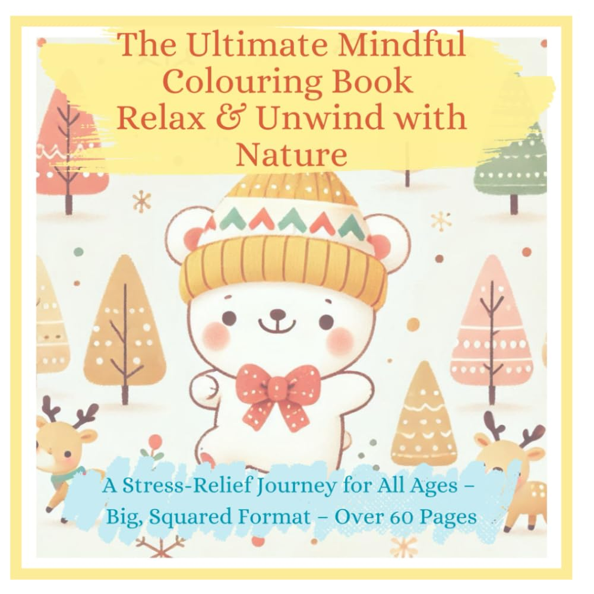

The Ultimate Mindful Colouring Book – Relax & Unwind with Nature: A Stress-Relief Journey for All Ages – Big, Squared Format – Over 60 Pages
by Light & Love (MW) · Christian books, devotionals & inspirational gifts

Step into a world of peace and creativity with The Ultimate Mindful Colouring Book — Relax & Unwind with Nature . Designed for all ages , this beautifully illustrated book offers a serene escape through the joy of colouring. Featuring over 60 pages of charming scenes, including picnics, peaceful park moments, singing, dancing in the rain, listening to music, and observing nature , this book encourages mindfulness…
Paperback · 80 pages · ISBN 979-8308993445